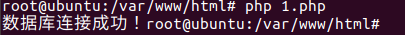
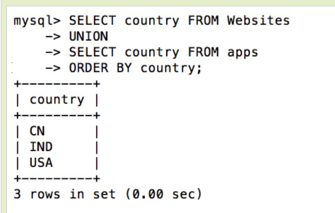
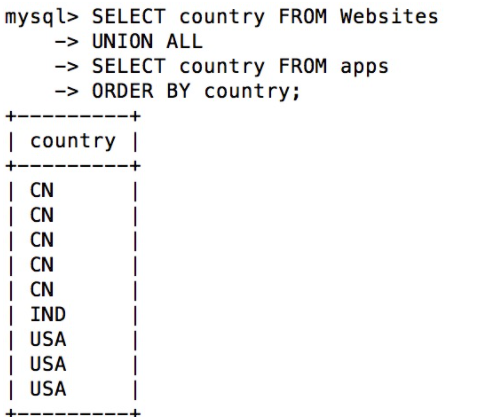
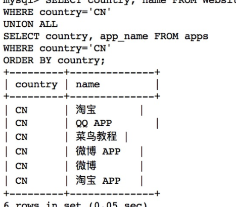

mysql学习记录
mysql学习
基本操作
自由咒语 rm -f
退出 exit
操作
连接
命令行连接 mysql -uroot -p
脚本连接
1 | <?php |

创建数据库
1 | CREATE DATABASE 数据库名; |
使用mysqladmin
1 | [root@host]# mysqladmin -u root -p create RUNOOB |
使用脚本
1 | <?php |
删除数据库
drop database <数据库名>;
使用mysqladmin
1 | [root@host]# mysqladmin -u root -p drop RUNOOB |
使用脚本
1 | <?php |
选择数据库
use xxx;
使用脚本
1 | <?php |
数据类型
MySQL 数据类型
MySQL 中定义数据字段的类型对你数据库的优化是非常重要的。
MySQL 支持多种类型，大致可以分为三类：数值、日期/时间和字符串(字符)类型。
数值类型
MySQL 支持所有标准 SQL 数值数据类型。
这些类型包括严格数值数据类型(INTEGER、SMALLINT、DECIMAL 和 NUMERIC)，以及近似数值数据类型(FLOAT、REAL 和 DOUBLE PRECISION)。
关键字INT是INTEGER的同义词，关键字DEC是DECIMAL的同义词。
BIT数据类型保存位字段值，并且支持 MyISAM、MEMORY、InnoDB 和 BDB表。
作为 SQL 标准的扩展，MySQL 也支持整数类型 TINYINT、MEDIUMINT 和 BIGINT。下面的表显示了需要的每个整数类型的存储和范围。
| 类型 | 大小 | 范围（有符号） | 范围（无符号） | 用途 |
|---|---|---|---|---|
| TINYINT | 1 Bytes | (-128，127) | (0，255) | 小整数值 |
| SMALLINT | 2 Bytes | (-32 768，32 767) | (0，65 535) | 大整数值 |
| MEDIUMINT | 3 Bytes | (-8 388 608，8 388 607) | (0，16 777 215) | 大整数值 |
| INT或INTEGER | 4 Bytes | (-2 147 483 648，2 147 483 647) | (0，4 294 967 295) | 大整数值 |
| BIGINT | 8 Bytes | (-9,223,372,036,854,775,808，9 223 372 036 854 775 807) | (0，18 446 744 073 709 551 615) | 极大整数值 |
| FLOAT | 4 Bytes | (-3.402 823 466 E+38，-1.175 494 351 E-38)，0，(1.175 494 351 E-38，3.402 823 466 351 E+38) | 0，(1.175 494 351 E-38，3.402 823 466 E+38) | 单精度 浮点数值 |
| DOUBLE | 8 Bytes | (-1.797 693 134 862 315 7 E+308，-2.225 073 858 507 201 4 E-308)，0，(2.225 073 858 507 201 4 E-308，1.797 693 134 862 315 7 E+308) | 0，(2.225 073 858 507 201 4 E-308，1.797 693 134 862 315 7 E+308) | 双精度 浮点数值 |
| DECIMAL | 对DECIMAL(M,D) ，如果M>D，为M+2否则为D+2 | 依赖于M和D的值 | 依赖于M和D的值 | 小数值 |
日期和时间类型
表示时间值的日期和时间类型为DATETIME、DATE、TIMESTAMP、TIME和YEAR。
每个时间类型有一个有效值范围和一个”零”值，当指定不合法的MySQL不能表示的值时使用”零”值。
TIMESTAMP类型有专有的自动更新特性，将在后面描述。
| 类型 | 大小 ( bytes) | 范围 | 格式 | 用途 |
|---|---|---|---|---|
| DATE | 3 | 1000-01-01/9999-12-31 | YYYY-MM-DD | 日期值 |
| TIME | 3 | ‘-838:59:59’/‘838:59:59’ | HH:MM:SS | 时间值或持续时间 |
| YEAR | 1 | 1901/2155 | YYYY | 年份值 |
| DATETIME | 8 | 1000-01-01 00:00:00/9999-12-31 23:59:59 | YYYY-MM-DD HH:MM:SS | 混合日期和时间值 |
| TIMESTAMP | 4 | 1970-01-01 00:00:00/2038结束时间是第 2147483647 秒，北京时间 2038-1-19 11:14:07，格林尼治时间 2038年1月19日 凌晨 03:14:07 | YYYYMMDD HHMMSS | 混合日期和时间值，时间戳 |
字符串类型
字符串类型指CHAR、VARCHAR、BINARY、VARBINARY、BLOB、TEXT、ENUM和SET。该节描述了这些类型如何工作以及如何在查询中使用这些类型。
| 类型 | 大小 | 用途 |
|---|---|---|
| CHAR | 0-255 bytes | 定长字符串 |
| VARCHAR | 0-65535 bytes | 变长字符串 |
| TINYBLOB | 0-255 bytes | 不超过 255 个字符的二进制字符串 |
| TINYTEXT | 0-255 bytes | 短文本字符串 |
| BLOB | 0-65 535 bytes | 二进制形式的长文本数据 |
| TEXT | 0-65 535 bytes | 长文本数据 |
| MEDIUMBLOB | 0-16 777 215 bytes | 二进制形式的中等长度文本数据 |
| MEDIUMTEXT | 0-16 777 215 bytes | 中等长度文本数据 |
| LONGBLOB | 0-4 294 967 295 bytes | 二进制形式的极大文本数据 |
| LONGTEXT | 0-4 294 967 295 bytes | 极大文本数据 |
注意：char(n) 和 varchar(n) 中括号中 n 代表字符的个数，并不代表字节个数，比如 CHAR(30) 就可以存储 30 个字符。
CHAR 和 VARCHAR 类型类似，但它们保存和检索的方式不同。它们的最大长度和是否尾部空格被保留等方面也不同。在存储或检索过程中不进行大小写转换。
BINARY 和 VARBINARY 类似于 CHAR 和 VARCHAR，不同的是它们包含二进制字符串而不要非二进制字符串。也就是说，它们包含字节字符串而不是字符字符串。这说明它们没有字符集，并且排序和比较基于列值字节的数值值。
BLOB 是一个二进制大对象，可以容纳可变数量的数据。有 4 种 BLOB 类型：TINYBLOB、BLOB、MEDIUMBLOB 和 LONGBLOB。它们区别在于可容纳存储范围不同。
有 4 种 TEXT 类型：TINYTEXT、TEXT、MEDIUMTEXT 和 LONGTEXT。对应的这 4 种 BLOB 类型，可存储的最大长度不同，可根据实际情况选择。
创建数据表
命令行
1 | root@host# mysql -u root -p |
脚本
1 | <?php |
删除表
DROP TABLE table_name ;
脚本
1 | <?php |
插入数据
1 | root@host# mysql -u root -p password; |
读取数据表：
select * from runoob_tbl;
脚本插入数据
1 | <?php |
查询数据表
脚本查询
1 | <?php |

使用mysqli_fetch_assoc()
1 | <?php |
实例使用 MYSQLI_NUM 参数显示数据表 runoob_tbl 的所有记录
1 | <?php |
内存释放
1 | echo '</table>'; |
where子句
SQL SELECT 语句来读取数据。
有条件地从表中选取数据，可将 WHERE 子句添加到 SELECT 语句
以下是 SQL SELECT 语句使用 WHERE 子句从数据表中读取数据的通用语法：
1 | SELECT field1, field2,...fieldN FROM table_name1, table_name2... |
- 查询语句中你可以使用一个或者多个表，表之间使用逗号**,** 分割，并使用WHERE语句来设定查询条件。
- 你可以在 WHERE 子句中指定任何条件。
- 你可以使用 AND 或者 OR 指定一个或多个条件。
- WHERE 子句也可以运用于 SQL 的 DELETE 或者 UPDATE 命令。
- WHERE 子句类似于程序语言中的 if 条件，根据 MySQL 表中的字段值来读取指定的数据。
以下为操作符列表，可用于 WHERE 子句中。
下表中实例假定 A 为 10, B 为 20
| 操作符 | 描述 | 实例 |
|---|---|---|
| = | 等号，检测两个值是否相等，如果相等返回true | (A = B) 返回false。 |
| <>, != | 不等于，检测两个值是否相等，如果不相等返回true | (A != B) 返回 true。 |
| > | 大于号，检测左边的值是否大于右边的值, 如果左边的值大于右边的值返回true | (A > B) 返回false。 |
| < | 小于号，检测左边的值是否小于右边的值, 如果左边的值小于右边的值返回true | (A < B) 返回 true。 |
| >= | 大于等于号，检测左边的值是否大于或等于右边的值, 如果左边的值大于或等于右边的值返回true | (A >= B) 返回false。 |
| <= | 小于等于号，检测左边的值是否小于或等于右边的值, 如果左边的值小于或等于右边的值返回true | (A <= B) 返回 true。 |
如果我们想在 MySQL 数据表中读取指定的数据，WHERE 子句是非常有用的。
使用主键来作为 WHERE 子句的条件查询是非常快速的。
如果给定的条件在表中没有任何匹配的记录，那么查询不会返回任何数据
以下实例将读取 runoob_tbl 表中 runoob_author 字段值为 Sanjay 的所有记录：
SQL SELECT WHERE 子句
SELECT * from runoob_tbl WHERE runoob_author='菜鸟教程';
可以使用 BINARY 关键字来设定 WHERE 子句的字符串比较是区分大小写
1 | mysql> SELECT * from runoob_tbl WHERE BINARY runoob_author='runoob.com'; |
脚本
1 | <?php |
update更新
我们需要修改或更新 MySQL 中的数据，我们可以使用 SQL UPDATE 命令来操作。
1 | mysql> UPDATE runoob_tbl SET runoob_title='学习 C++' WHERE runoob_id=3; |
脚本
1 | <?php |
delete子句
SQL 的 DELETE FROM 命令来删除 MySQL 数据表中的记录
1 | mysql> use RUNOOB; |
脚本
1 | <?php |
like子句
使用 WHERE…LIKE 子句来从MySQL数据表 runoob_tbl 中读取数据。
这时我们就需要在 WHERE 子句中使用 SQL LIKE 子句。
SQL LIKE 子句中使用百分号 **%**字符来表示任意字符，类似于UNIX或正则表达式中的星号 *****。
如果没有使用百分号 %, LIKE 子句与等号 = 的效果是一样的。
以下是我们将 runoob_tbl 表中获取 runoob_author 字段中以 COM为结尾的的所有记录
1 | mysql> use RUNOOB; |
脚本
1 | <?php |
union
MySQL UNION 操作符用于连接两个以上的 SELECT 语句的结果组合到一个结果集合中。多个 SELECT 语句会删除重复的数据。
1 | SELECT country FROM Websites |

union all
1 | SELECT country FROM Websites |

where 的unionall
1 | SELECT country, name FROM Websites |

排序
order by
1 | mysql> use RUNOOB; |
脚本
1 | <?php |
分组
group by
GROUP BY 语句根据一个或多个列对结果集进行分组。
在分组的列上我们可以使用 COUNT, SUM, AVG,等函数。
1 | mysql> set names utf8; |
1 | mysql> SELECT name, COUNT(*) FROM employee_tbl GROUP BY name; |
with rollup
1 | mysql> SELECT name, SUM(signin) as signin_count FROM employee_tbl GROUP BY name WITH ROLLUP; |
coalesce
1 | mysql> SELECT coalesce(name, '总数'), SUM(signin) as signin_count FROM employee_tbl GROUP BY name WITH ROLLUP; |
MySQL 导入数据
本章节我们为大家介绍几种简单的 MySQL 导入数据命令。
1、mysql 命令导入
使用 mysql 命令导入语法格式为：
1 | mysql -u用户名 -p密码 < 要导入的数据库数据(runoob.sql) |
实例：
1 | # mysql -uroot -p123456 < runoob.sql |
以上命令将将备份的整个数据库 runoob.sql 导入。
2、source 命令导入
source 命令导入数据库需要先登录到数库终端：
1 | mysql> create database abc; # 创建数据库 |
3、使用 LOAD DATA 导入数据
MySQL 中提供了LOAD DATA INFILE语句来插入数据。 以下实例中将从当前目录中读取文件 dump.txt ，将该文件中的数据插入到当前数据库的 mytbl 表中。
1 | mysql> LOAD DATA LOCAL INFILE 'dump.txt' INTO TABLE mytbl; |
如果指定LOCAL关键词，则表明从客户主机上按路径读取文件。如果没有指定，则文件在服务器上按路径读取文件。
你能明确地在LOAD DATA语句中指出列值的分隔符和行尾标记，但是默认标记是定位符和换行符。
两个命令的 FIELDS 和 LINES 子句的语法是一样的。两个子句都是可选的，但是如果两个同时被指定，FIELDS 子句必须出现在 LINES 子句之前。
如果用户指定一个 FIELDS 子句，它的子句 （TERMINATED BY、[OPTIONALLY] ENCLOSED BY 和 ESCAPED BY) 也是可选的，不过，用户必须至少指定它们中的一个。
1 | mysql> LOAD DATA LOCAL INFILE 'dump.txt' INTO TABLE mytbl |
LOAD DATA 默认情况下是按照数据文件中列的顺序插入数据的，如果数据文件中的列与插入表中的列不一致，则需要指定列的顺序。
如，在数据文件中的列顺序是 a,b,c，但在插入表的列顺序为b,c,a，则数据导入语法如下：
1 | mysql> LOAD DATA LOCAL INFILE 'dump.txt' |
4、使用 mysqlimport 导入数据
mysqlimport 客户端提供了 LOAD DATA INFILEQL 语句的一个命令行接口。mysqlimport 的大多数选项直接对应 LOAD DATA INFILE 子句。
从文件 dump.txt 中将数据导入到 mytbl 数据表中, 可以使用以下命令：
1 | $ mysqlimport -u root -p --local mytbl dump.txt |
mysqlimport 命令可以指定选项来设置指定格式,命令语句格式如下：
1 | $ mysqlimport -u root -p --local --fields-terminated-by=":" \ |
mysqlimport 语句中使用 –columns 选项来设置列的顺序：
1 | $ mysqlimport -u root -p --local --columns=b,c,a \ |
mysqlimport的常用选项介绍
| 选项 | 功能 |
|---|---|
| -d or –delete | 新数据导入数据表中之前删除数据数据表中的所有信息 |
| -f or –force | 不管是否遇到错误，mysqlimport将强制继续插入数据 |
| -i or –ignore | mysqlimport跳过或者忽略那些有相同唯一 关键字的行， 导入文件中的数据将被忽略。 |
| -l or -lock-tables | 数据被插入之前锁住表，这样就防止了， 你在更新数据库时，用户的查询和更新受到影响。 |
| -r or -replace | 这个选项与－i选项的作用相反；此选项将替代 表中有相同唯一关键字的记录。 |
| –fields-enclosed- by= char | 指定文本文件中数据的记录时以什么括起的， 很多情况下 数据以双引号括起。 默认的情况下数据是没有被字符括起的。 |
| –fields-terminated- by=char | 指定各个数据的值之间的分隔符，在句号分隔的文件中， 分隔符是句号。您可以用此选项指定数据之间的分隔符。 默认的分隔符是跳格符（Tab） |
| –lines-terminated- by=str | 此选项指定文本文件中行与行之间数据的分隔字符串 或者字符。 默认的情况下mysqlimport以newline为行分隔符。 您可以选择用一个字符串来替代一个单个的字符： 一个新行或者一个回车。 |
mysqlimport 命令常用的选项还有 -v 显示版本（version）， -p 提示输入密码（password）等。
MySQL 函数
MySQL 有很多内置的函数，以下列出了这些函数的说明。
MySQL 字符串函数
| 函数 | 描述 | 实例 |
|---|---|---|
| ASCII(s) | 返回字符串 s 的第一个字符的 ASCII 码。 | 返回 CustomerName 字段第一个字母的 ASCII 码：SELECT ASCII(CustomerName) AS NumCodeOfFirstChar FROM Customers; |
| CHAR_LENGTH(s) | 返回字符串 s 的字符数 | 返回字符串 RUNOOB 的字符数SELECT CHAR_LENGTH("RUNOOB") AS LengthOfString; |
| CHARACTER_LENGTH(s) | 返回字符串 s 的字符数 | 返回字符串 RUNOOB 的字符数SELECT CHARACTER_LENGTH("RUNOOB") AS LengthOfString; |
| CONCAT(s1,s2…sn) | 字符串 s1,s2 等多个字符串合并为一个字符串 | 合并多个字符串SELECT CONCAT("SQL ", "Runoob ", "Gooogle ", "Facebook") AS ConcatenatedString; |
| CONCAT_WS(x, s1,s2…sn) | 同 CONCAT(s1,s2,…) 函数，但是每个字符串之间要加上 x，x 可以是分隔符 | 合并多个字符串，并添加分隔符：SELECT CONCAT_WS("-", "SQL", "Tutorial", "is", "fun!")AS ConcatenatedString; |
| FIELD(s,s1,s2…) | 返回第一个字符串 s 在字符串列表(s1,s2…)中的位置 | 返回字符串 c 在列表值中的位置：SELECT FIELD("c", "a", "b", "c", "d", "e"); |
| FIND_IN_SET(s1,s2) | 返回在字符串s2中与s1匹配的字符串的位置 | 返回字符串 c 在指定字符串中的位置：SELECT FIND_IN_SET("c", "a,b,c,d,e"); |
| FORMAT(x,n) | 函数可以将数字 x 进行格式化 “#,###.##”, 将 x 保留到小数点后 n 位，最后一位四舍五入。 | 格式化数字 “#,###.##” 形式：SELECT FORMAT(250500.5634, 2); -- 输出 250,500.56 |
| INSERT(s1,x,len,s2) | 字符串 s2 替换 s1 的 x 位置开始长度为 len 的字符串 | 从字符串第一个位置开始的 6 个字符替换为 runoob：SELECT INSERT("google.com", 1, 6, "runoob"); -- 输出：runoob.com |
| LOCATE(s1,s) | 从字符串 s 中获取 s1 的开始位置 | 获取 b 在字符串 abc 中的位置：SELECT LOCATE('st','myteststring'); -- 5 返回字符串 abc 中 b 的位置：SELECT LOCATE('b', 'abc') -- 2 |
| LCASE(s) | 将字符串 s 的所有字母变成小写字母 | 字符串 RUNOOB 转换为小写：SELECT LCASE('RUNOOB') -- runoob |
| LEFT(s,n) | 返回字符串 s 的前 n 个字符 | 返回字符串 runoob 中的前两个字符：SELECT LEFT('runoob',2) -- ru |
| LOWER(s) | 将字符串 s 的所有字母变成小写字母 | 字符串 RUNOOB 转换为小写：SELECT LOWER('RUNOOB') -- runoob |
| LPAD(s1,len,s2) | 在字符串 s1 的开始处填充字符串 s2，使字符串长度达到 len | 将字符串 xx 填充到 abc 字符串的开始处：SELECT LPAD('abc',5,'xx') -- xxabc |
| LTRIM(s) | 去掉字符串 s 开始处的空格 | 去掉字符串 RUNOOB开始处的空格：SELECT LTRIM(" RUNOOB") AS LeftTrimmedString;-- RUNOOB |
| MID(s,n,len) | 从字符串 s 的 n 位置截取长度为 len 的子字符串，同 SUBSTRING(s,n,len) | 从字符串 RUNOOB 中的第 2 个位置截取 3个 字符：SELECT MID("RUNOOB", 2, 3) AS ExtractString; -- UNO |
| POSITION(s1 IN s) | 从字符串 s 中获取 s1 的开始位置 | 返回字符串 abc 中 b 的位置：SELECT POSITION('b' in 'abc') -- 2 |
| REPEAT(s,n) | 将字符串 s 重复 n 次 | 将字符串 runoob 重复三次：SELECT REPEAT('runoob',3) -- runoobrunoobrunoob |
| REPLACE(s,s1,s2) | 将字符串 s2 替代字符串 s 中的字符串 s1 | 将字符串 abc 中的字符 a 替换为字符 x：SELECT REPLACE('abc','a','x') --xbc |
| REVERSE(s) | 将字符串s的顺序反过来 | 将字符串 abc 的顺序反过来：SELECT REVERSE('abc') -- cba |
| RIGHT(s,n) | 返回字符串 s 的后 n 个字符 | 返回字符串 runoob 的后两个字符：SELECT RIGHT('runoob',2) -- ob |
| RPAD(s1,len,s2) | 在字符串 s1 的结尾处添加字符串 s2，使字符串的长度达到 len | 将字符串 xx 填充到 abc 字符串的结尾处：SELECT RPAD('abc',5,'xx') -- abcxx |
| RTRIM(s) | 去掉字符串 s 结尾处的空格 | 去掉字符串 RUNOOB 的末尾空格：SELECT RTRIM("RUNOOB ") AS RightTrimmedString; -- RUNOOB |
| SPACE(n) | 返回 n 个空格 | 返回 10 个空格：SELECT SPACE(10); |
| STRCMP(s1,s2) | 比较字符串 s1 和 s2，如果 s1 与 s2 相等返回 0 ，如果 s1>s2 返回 1，如果 s1<s2 返回 -1 | 比较字符串：SELECT STRCMP("runoob", "runoob"); -- 0 |
| SUBSTR(s, start, length) | 从字符串 s 的 start 位置截取长度为 length 的子字符串 | 从字符串 RUNOOB 中的第 2 个位置截取 3个 字符：SELECT SUBSTR("RUNOOB", 2, 3) AS ExtractString; -- UNO |
| SUBSTRING(s, start, length) | 从字符串 s 的 start 位置截取长度为 length 的子字符串 | 从字符串 RUNOOB 中的第 2 个位置截取 3个 字符：SELECT SUBSTRING("RUNOOB", 2, 3) AS ExtractString; -- UNO |
| SUBSTRING_INDEX(s, delimiter, number) | 返回从字符串 s 的第 number 个出现的分隔符 delimiter 之后的子串。 如果 number 是正数，返回第 number 个字符左边的字符串。 如果 number 是负数，返回第(number 的绝对值(从右边数))个字符右边的字符串。 | SELECT SUBSTRING_INDEX('a*b','*',1) -- a SELECT SUBSTRING_INDEX('a*b','*',-1) -- b SELECT SUBSTRING_INDEX(SUBSTRING_INDEX('a*b*c*d*e','*',3),'*',-1) -- c |
| TRIM(s) | 去掉字符串 s 开始和结尾处的空格 | 去掉字符串 RUNOOB 的首尾空格：SELECT TRIM(' RUNOOB ') AS TrimmedString; |
| UCASE(s) | 将字符串转换为大写 | 将字符串 runoob 转换为大写：SELECT UCASE("runoob"); -- RUNOOB |
| UPPER(s) | 将字符串转换为大写 | 将字符串 runoob 转换为大写：SELECT UPPER("runoob"); -- RUNOOB |
MySQL 数字函数
| 函数名 | 描述 | 实例 |
|---|---|---|
| ABS(x) | 返回 x 的绝对值 | 返回 -1 的绝对值：SELECT ABS(-1) -- 返回1 |
| ACOS(x) | 求 x 的反余弦值（单位为弧度），x 为一个数值 | SELECT ACOS(0.25); |
| ASIN(x) | 求反正弦值（单位为弧度），x 为一个数值 | SELECT ASIN(0.25); |
| ATAN(x) | 求反正切值（单位为弧度），x 为一个数值 | SELECT ATAN(2.5); |
| ATAN2(n, m) | 求反正切值（单位为弧度） | SELECT ATAN2(-0.8, 2); |
| AVG(expression) | 返回一个表达式的平均值，expression 是一个字段 | 返回 Products 表中Price 字段的平均值：SELECT AVG(Price) AS AveragePrice FROM Products; |
| CEIL(x) | 返回大于或等于 x 的最小整数 | SELECT CEIL(1.5) -- 返回2 |
| CEILING(x) | 返回大于或等于 x 的最小整数 | SELECT CEILING(1.5); -- 返回2 |
| COS(x) | 求余弦值(参数是弧度) | SELECT COS(2); |
| COT(x) | 求余切值(参数是弧度) | SELECT COT(6); |
| COUNT(expression) | 返回查询的记录总数，expression 参数是一个字段或者 * 号 | 返回 Products 表中 products 字段总共有多少条记录：SELECT COUNT(ProductID) AS NumberOfProducts FROM Products; |
| DEGREES(x) | 将弧度转换为角度 | SELECT DEGREES(3.1415926535898) -- 180 |
| n DIV m | 整除，n 为被除数，m 为除数 | 计算 10 除于 5：SELECT 10 DIV 5; -- 2 |
| EXP(x) | 返回 e 的 x 次方 | 计算 e 的三次方：SELECT EXP(3) -- 20.085536923188 |
| FLOOR(x) | 返回小于或等于 x 的最大整数 | 小于或等于 1.5 的整数：SELECT FLOOR(1.5) -- 返回1 |
| GREATEST(expr1, expr2, expr3, …) | 返回列表中的最大值 | 返回以下数字列表中的最大值：SELECT GREATEST(3, 12, 34, 8, 25); -- 34 返回以下字符串列表中的最大值：SELECT GREATEST("Google", "Runoob", "Apple"); -- Runoob |
| LEAST(expr1, expr2, expr3, …) | 返回列表中的最小值 | 返回以下数字列表中的最小值：SELECT LEAST(3, 12, 34, 8, 25); -- 3 返回以下字符串列表中的最小值：SELECT LEAST("Google", "Runoob", "Apple"); -- Apple |
| LN | 返回数字的自然对数，以 e 为底。 | 返回 2 的自然对数：SELECT LN(2); -- 0.6931471805599453 |
| LOG(x) 或 LOG(base, x) | 返回自然对数(以 e 为底的对数)，如果带有 base 参数，则 base 为指定带底数。 | SELECT LOG(20.085536923188) -- 3 SELECT LOG(2, 4); -- 2 |
| LOG10(x) | 返回以 10 为底的对数 | SELECT LOG10(100) -- 2 |
| LOG2(x) | 返回以 2 为底的对数 | 返回以 2 为底 6 的对数：SELECT LOG2(6); -- 2.584962500721156 |
| MAX(expression) | 返回字段 expression 中的最大值 | 返回数据表 Products 中字段 Price 的最大值：SELECT MAX(Price) AS LargestPrice FROM Products; |
| MIN(expression) | 返回字段 expression 中的最小值 | 返回数据表 Products 中字段 Price 的最小值：SELECT MIN(Price) AS MinPrice FROM Products; |
| MOD(x,y) | 返回 x 除以 y 以后的余数 | 5 除于 2 的余数：SELECT MOD(5,2) -- 1 |
| PI() | 返回圆周率(3.141593） | SELECT PI() --3.141593 |
| POW(x,y) | 返回 x 的 y 次方 | 2 的 3 次方：SELECT POW(2,3) -- 8 |
| POWER(x,y) | 返回 x 的 y 次方 | 2 的 3 次方：SELECT POWER(2,3) -- 8 |
| RADIANS(x) | 将角度转换为弧度 | 180 度转换为弧度：SELECT RADIANS(180) -- 3.1415926535898 |
| RAND() | 返回 0 到 1 的随机数 | SELECT RAND() --0.93099315644334 |
| ROUND(x) | 返回离 x 最近的整数 | SELECT ROUND(1.23456) --1 |
| SIGN(x) | 返回 x 的符号，x 是负数、0、正数分别返回 -1、0 和 1 | SELECT SIGN(-10) -- (-1) |
| SIN(x) | 求正弦值(参数是弧度) | SELECT SIN(RADIANS(30)) -- 0.5 |
| SQRT(x) | 返回x的平方根 | 25 的平方根：SELECT SQRT(25) -- 5 |
| SUM(expression) | 返回指定字段的总和 | 计算 OrderDetails 表中字段 Quantity 的总和：SELECT SUM(Quantity) AS TotalItemsOrdered FROM OrderDetails; |
| TAN(x) | 求正切值(参数是弧度) | SELECT TAN(1.75); -- -5.52037992250933 |
| TRUNCATE(x,y) | 返回数值 x 保留到小数点后 y 位的值（与 ROUND 最大的区别是不会进行四舍五入） | SELECT TRUNCATE(1.23456,3) -- 1.234 |
MySQL 日期函数
| 函数名 | 描述 | 实例 |
|---|---|---|
| ADDDATE(d,n) | 计算起始日期 d 加上 n 天的日期 | SELECT ADDDATE("2017-06-15", INTERVAL 10 DAY); ->2017-06-25 |
| ADDTIME(t,n) | n 是一个时间表达式，时间 t 加上时间表达式 n | 加 5 秒：SELECT ADDTIME('2011-11-11 11:11:11', 5); ->2011-11-11 11:11:16 (秒) 添加 2 小时, 10 分钟, 5 秒:SELECT ADDTIME("2020-06-15 09:34:21", "2:10:5"); -> 2020-06-15 11:44:26 |
| CURDATE() | 返回当前日期 | SELECT CURDATE(); -> 2018-09-19 |
| CURRENT_DATE() | 返回当前日期 | SELECT CURRENT_DATE(); -> 2018-09-19 |
| CURRENT_TIME | 返回当前时间 | SELECT CURRENT_TIME(); -> 19:59:02 |
| CURRENT_TIMESTAMP() | 返回当前日期和时间 | SELECT CURRENT_TIMESTAMP() -> 2018-09-19 20:57:43 |
| CURTIME() | 返回当前时间 | SELECT CURTIME(); -> 19:59:02 |
| DATE() | 从日期或日期时间表达式中提取日期值 | SELECT DATE("2017-06-15"); -> 2017-06-15 |
| DATEDIFF(d1,d2) | 计算日期 d1->d2 之间相隔的天数 | SELECT DATEDIFF('2001-01-01','2001-02-02') -> -32 |
| DATE_ADD(d，INTERVAL expr type) | 计算起始日期 d 加上一个时间段后的日期，type 值可以是：MICROSECONDSECONDMINUTEHOURDAYWEEKMONTHQUARTERYEARSECOND_MICROSECONDMINUTE_MICROSECONDMINUTE_SECONDHOUR_MICROSECONDHOUR_SECONDHOUR_MINUTEDAY_MICROSECONDDAY_SECONDDAY_MINUTEDAY_HOURYEAR_MONTH | SELECT DATE_ADD("2017-06-15", INTERVAL 10 DAY); -> 2017-06-25 SELECT DATE_ADD("2017-06-15 09:34:21", INTERVAL 15 MINUTE); -> 2017-06-15 09:49:21 SELECT DATE_ADD("2017-06-15 09:34:21", INTERVAL -3 HOUR); ->2017-06-15 06:34:21 SELECT DATE_ADD("2017-06-15 09:34:21", INTERVAL -3 HOUR); ->2017-04-15 |
| DATE_FORMAT(d,f) | 按表达式 f的要求显示日期 d | SELECT DATE_FORMAT('2011-11-11 11:11:11','%Y-%m-%d %r') -> 2011-11-11 11:11:11 AM |
| DATE_SUB(date,INTERVAL expr type) | 函数从日期减去指定的时间间隔。 | Orders 表中 OrderDate 字段减去 2 天：SELECT OrderId,DATE_SUB(OrderDate,INTERVAL 2 DAY) AS OrderPayDate FROM Orders |
| DAY(d) | 返回日期值 d 的日期部分 | SELECT DAY("2017-06-15"); -> 15 |
| DAYNAME(d) | 返回日期 d 是星期几，如 Monday,Tuesday | SELECT DAYNAME('2011-11-11 11:11:11') ->Friday |
| DAYOFMONTH(d) | 计算日期 d 是本月的第几天 | SELECT DAYOFMONTH('2011-11-11 11:11:11') ->11 |
| DAYOFWEEK(d) | 日期 d 今天是星期几，1 星期日，2 星期一，以此类推 | SELECT DAYOFWEEK('2011-11-11 11:11:11') ->6 |
| DAYOFYEAR(d) | 计算日期 d 是本年的第几天 | SELECT DAYOFYEAR('2011-11-11 11:11:11') ->315 |
| EXTRACT(type FROM d) | 从日期 d 中获取指定的值，type 指定返回的值。 type可取值为： MICROSECONDSECONDMINUTEHOURDAYWEEKMONTHQUARTERYEARSECOND_MICROSECONDMINUTE_MICROSECONDMINUTE_SECONDHOUR_MICROSECONDHOUR_SECONDHOUR_MINUTEDAY_MICROSECONDDAY_SECONDDAY_MINUTEDAY_HOURYEAR_MONTH | SELECT EXTRACT(MINUTE FROM '2011-11-11 11:11:11') -> 11 |
| FROM_DAYS(n) | 计算从 0000 年 1 月 1 日开始 n 天后的日期 | SELECT FROM_DAYS(1111) -> 0003-01-16 |
| HOUR(t) | 返回 t 中的小时值 | SELECT HOUR('1:2:3') -> 1 |
| LAST_DAY(d) | 返回给给定日期的那一月份的最后一天 | SELECT LAST_DAY("2017-06-20"); -> 2017-06-30 |
| LOCALTIME() | 返回当前日期和时间 | SELECT LOCALTIME() -> 2018-09-19 20:57:43 |
| LOCALTIMESTAMP() | 返回当前日期和时间 | SELECT LOCALTIMESTAMP() -> 2018-09-19 20:57:43 |
| MAKEDATE(year, day-of-year) | 基于给定参数年份 year 和所在年中的天数序号 day-of-year 返回一个日期 | SELECT MAKEDATE(2017, 3); -> 2017-01-03 |
| MAKETIME(hour, minute, second) | 组合时间，参数分别为小时、分钟、秒 | SELECT MAKETIME(11, 35, 4); -> 11:35:04 |
| MICROSECOND(date) | 返回日期参数所对应的微秒数 | SELECT MICROSECOND("2017-06-20 09:34:00.000023"); -> 23 |
| MINUTE(t) | 返回 t 中的分钟值 | SELECT MINUTE('1:2:3') -> 2 |
| MONTHNAME(d) | 返回日期当中的月份名称，如 November | SELECT MONTHNAME('2011-11-11 11:11:11') -> November |
| MONTH(d) | 返回日期d中的月份值，1 到 12 | SELECT MONTH('2011-11-11 11:11:11') ->11 |
| NOW() | 返回当前日期和时间 | SELECT NOW() -> 2018-09-19 20:57:43 |
| PERIOD_ADD(period, number) | 为 年-月 组合日期添加一个时段 | SELECT PERIOD_ADD(201703, 5); -> 201708 |
| PERIOD_DIFF(period1, period2) | 返回两个时段之间的月份差值 | SELECT PERIOD_DIFF(201710, 201703); -> 7 |
| QUARTER(d) | 返回日期d是第几季节，返回 1 到 4 | SELECT QUARTER('2011-11-11 11:11:11') -> 4 |
| SECOND(t) | 返回 t 中的秒钟值 | SELECT SECOND('1:2:3') -> 3 |
| SEC_TO_TIME(s) | 将以秒为单位的时间 s 转换为时分秒的格式 | SELECT SEC_TO_TIME(4320) -> 01:12:00 |
| STR_TO_DATE(string, format_mask) | 将字符串转变为日期 | SELECT STR_TO_DATE("August 10 2017", "%M %d %Y"); -> 2017-08-10 |
| SUBDATE(d,n) | 日期 d 减去 n 天后的日期 | SELECT SUBDATE('2011-11-11 11:11:11', 1) ->2011-11-10 11:11:11 (默认是天) |
| SUBTIME(t,n) | 时间 t 减去 n 秒的时间 | SELECT SUBTIME('2011-11-11 11:11:11', 5) ->2011-11-11 11:11:06 (秒) |
| SYSDATE() | 返回当前日期和时间 | SELECT SYSDATE() -> 2018-09-19 20:57:43 |
| TIME(expression) | 提取传入表达式的时间部分 | SELECT TIME("19:30:10"); -> 19:30:10 |
| TIME_FORMAT(t,f) | 按表达式 f 的要求显示时间 t | SELECT TIME_FORMAT('11:11:11','%r') 11:11:11 AM |
| TIME_TO_SEC(t) | 将时间 t 转换为秒 | SELECT TIME_TO_SEC('1:12:00') -> 4320 |
| TIMEDIFF(time1, time2) | 计算时间差值 | mysql> SELECT TIMEDIFF("13:10:11", "13:10:10"); -> 00:00:01 mysql> SELECT TIMEDIFF('2000:01:01 00:00:00', -> '2000:01:01 00:00:00.000001'); -> '-00:00:00.000001' mysql> SELECT TIMEDIFF('2008-12-31 23:59:59.000001', -> '2008-12-30 01:01:01.000002'); -> '46:58:57.999999' |
| TIMESTAMP(expression, interval) | 单个参数时，函数返回日期或日期时间表达式；有2个参数时，将参数加和 | mysql> SELECT TIMESTAMP("2017-07-23", "13:10:11"); -> 2017-07-23 13:10:11 mysql> SELECT TIMESTAMP('2003-12-31'); -> '2003-12-31 00:00:00' mysql> SELECT TIMESTAMP('2003-12-31 12:00:00','12:00:00'); -> '2004-01-01 00:00:00' |
| TIMESTAMPDIFF(unit,datetime_expr1,datetime_expr2) | 计算时间差，返回 datetime_expr2 − datetime_expr1 的时间差 | mysql> SELECT TIMESTAMPDIFF(DAY,'2003-02-01','2003-05-01'); // 计算两个时间相隔多少天 -> 89 mysql> SELECT TIMESTAMPDIFF(MONTH,'2003-02-01','2003-05-01'); // 计算两个时间相隔多少月 -> 3 mysql> SELECT TIMESTAMPDIFF(YEAR,'2002-05-01','2001-01-01'); // 计算两个时间相隔多少年 -> -1 mysql> SELECT TIMESTAMPDIFF(MINUTE,'2003-02-01','2003-05-01 12:05:55'); // 计算两个时间相隔多少分钟 -> 128885 |
| TO_DAYS(d) | 计算日期 d 距离 0000 年 1 月 1 日的天数 | SELECT TO_DAYS('0001-01-01 01:01:01') -> 366 |
| WEEK(d) | 计算日期 d 是本年的第几个星期，范围是 0 到 53 | SELECT WEEK('2011-11-11 11:11:11') -> 45 |
| WEEKDAY(d) | 日期 d 是星期几，0 表示星期一，1 表示星期二 | SELECT WEEKDAY("2017-06-15"); -> 3 |
| WEEKOFYEAR(d) | 计算日期 d 是本年的第几个星期，范围是 0 到 53 | SELECT WEEKOFYEAR('2011-11-11 11:11:11') -> 45 |
| YEAR(d) | 返回年份 | SELECT YEAR("2017-06-15"); -> 2017 |
| YEARWEEK(date, mode) | 返回年份及第几周（0到53），mode 中 0 表示周天，1表示周一，以此类推 | SELECT YEARWEEK("2017-06-15"); -> 201724 |
MySQL 高级函数
| 函数名 | 描述 | 实例 |
|---|---|---|
| BIN(x) | 返回 x 的二进制编码 | 15 的 2 进制编码:SELECT BIN(15); -- 1111 |
| BINARY(s) | 将字符串 s 转换为二进制字符串 | SELECT BINARY "RUNOOB"; -> RUNOOB |
CASE expression WHEN condition1 THEN result1 WHEN condition2 THEN result2 ... WHEN conditionN THEN resultN ELSE result END |
CASE 表示函数开始，END 表示函数结束。如果 condition1 成立，则返回 result1, 如果 condition2 成立，则返回 result2，当全部不成立则返回 result，而当有一个成立之后，后面的就不执行了。 | SELECT CASE WHEN 1 > 0 THEN '1 > 0' WHEN 2 > 0 THEN '2 > 0' ELSE '3 > 0' END ->1 > 0 |
| CAST(x AS type) | 转换数据类型 | 字符串日期转换为日期：SELECT CAST("2017-08-29" AS DATE); -> 2017-08-29 |
| COALESCE(expr1, expr2, …., expr_n) | 返回参数中的第一个非空表达式（从左向右） | SELECT COALESCE(NULL, NULL, NULL, 'runoob.com', NULL, 'google.com'); -> runoob.com |
| CONNECTION_ID() | 返回唯一的连接 ID | SELECT CONNECTION_ID(); -> 4292835 |
| CONV(x,f1,f2) | 返回 f1 进制数变成 f2 进制数 | SELECT CONV(15, 10, 2); -> 1111 |
| CONVERT(s USING cs) | 函数将字符串 s 的字符集变成 cs | SELECT CHARSET('ABC') ->utf-8 SELECT CHARSET(CONVERT('ABC' USING gbk)) ->gbk |
| CURRENT_USER() | 返回当前用户 | SELECT CURRENT_USER(); -> guest@% |
| DATABASE() | 返回当前数据库名 | SELECT DATABASE(); -> runoob |
| IF(expr,v1,v2) | 如果表达式 expr 成立，返回结果 v1；否则，返回结果 v2。 | SELECT IF(1 > 0,'正确','错误') ->正确 |
| IFNULL(v1,v2) | 如果 v1 的值不为 NULL，则返回 v1，否则返回 v2。 | SELECT IFNULL(null,'Hello Word') ->Hello Word |
| ISNULL(expression) | 判断表达式是否为 NULL | SELECT ISNULL(NULL); ->1 |
| LAST_INSERT_ID() | 返回最近生成的 AUTO_INCREMENT 值 | SELECT LAST_INSERT_ID(); ->6 |
| NULLIF(expr1, expr2) | 比较两个字符串，如果字符串 expr1 与 expr2 相等 返回 NULL，否则返回 expr1 | SELECT NULLIF(25, 25); -> |
| SESSION_USER() | 返回当前用户 | SELECT SESSION_USER(); -> guest@% |
| SYSTEM_USER() | 返回当前用户 | SELECT SYSTEM_USER(); -> guest@% |
| USER() | 返回当前用户 | SELECT USER(); -> guest@% |
| VERSION() | 返回数据库的版本号 | SELECT VERSION() -> 5.6.34 |
MySQL 运算符
- 算术运算符
- 比较运算符
- 逻辑运算符
- 位运算符
算术运算符
MySQL 支持的算术运算符包括:
| 运算符 | 作用 |
|---|---|
| + | 加法 |
| - | 减法 |
| * | 乘法 |
| / 或 DIV | 除法 |
| % 或 MOD | 取余 |
在除法运算和模运算中，如果除数为0，将是非法除数，返回结果为NULL。
1、加
1 | mysql> select 1+2; |
2、减
1 | mysql> select 1-2; |
3、乘
1 | mysql> select 2*3; |
4、除
1 | mysql> select 2/3; |
5、商
1 | mysql> select 10 DIV 4; |
6、取余
1 | mysql> select 10 MOD 4; |
比较运算符
SELECT 语句中的条件语句经常要使用比较运算符。通过这些比较运算符，可以判断表中的哪些记录是符合条件的。比较结果为真，则返回 1，为假则返回 0，比较结果不确定则返回 NULL。
| 符号 | 描述 | 备注 |
|---|---|---|
| = | 等于 | |
| <>, != | 不等于 | |
| > | 大于 | |
| < | 小于 | |
| <= | 小于等于 | |
| >= | 大于等于 | |
| BETWEEN | 在两值之间 | >=min&&<=max |
| NOT BETWEEN | 不在两值之间 | |
| IN | 在集合中 | |
| NOT IN | 不在集合中 | |
| <=> | 严格比较两个NULL值是否相等 | 两个操作码均为NULL时，其所得值为1；而当一个操作码为NULL时，其所得值为0 |
| LIKE | 模糊匹配 | |
| REGEXP 或 RLIKE | 正则式匹配 | |
| IS NULL | 为空 | |
| IS NOT NULL | 不为空 |
1、等于
1 | mysql> select 2=3; |
2、不等于
1 | mysql> select 2<>3; |
3、安全等于
与 = 的区别在于当两个操作码均为 NULL 时，其所得值为 1 而不为 NULL，而当一个操作码为 NULL 时，其所得值为 0而不为 NULL。
1 | mysql> select 2<=>3; |
4、小于
1 | mysql> select 2<3; |
5、小于等于
1 | mysql> select 2<=3; |
6、大于
1 | mysql> select 2>3; |
7、大于等于
1 | mysql> select 2>=3; |
8、BETWEEN
1 | mysql> select 5 between 1 and 10; |
9、IN
1 | mysql> select 5 in (1,2,3,4,5); |
10、NOT IN
1 | mysql> select 5 not in (1,2,3,4,5); |
11、IS NULL
1 | mysql> select null is NULL; |
12、IS NOT NULL
1 | mysql> select null IS NOT NULL; |
13、LIKE
1 | mysql> select '12345' like '12%'; |
14、REGEXP
1 | mysql> select 'beijing' REGEXP 'jing'; |
逻辑运算符
逻辑运算符用来判断表达式的真假。如果表达式是真，结果返回 1。如果表达式是假，结果返回 0。
| 运算符号 | 作用 |
|---|---|
| NOT 或 ! | 逻辑非 |
| AND | 逻辑与 |
| OR | 逻辑或 |
| XOR | 逻辑异或 |
1、与
1 | mysql> select 2 and 0; |
2、或
1 | mysql> select 2 or 0; |
3、非
1 | mysql> select not 1; |
4、异或
1 | mysql> select 1 xor 1; |
位运算符
位运算符是在二进制数上进行计算的运算符。位运算会先将操作数变成二进制数，进行位运算。然后再将计算结果从二进制数变回十进制数。
| 运算符号 | 作用 |
|---|---|
| & | 按位与 |
| | | 按位或 |
| ^ | 按位异或 |
| ! | 取反 |
| << | 左移 |
| >> | 右移 |
1、按位与
1 | mysql> select 3&5; |
2、按位或
1 | mysql> select 3|5; |
3、按位异或
1 | mysql> select 3^5; |
4、按位取反
1 | mysql> select ~18446744073709551612; |
5、按位右移
1 | mysql> select 3>>1; |
6、按位左移
1 | mysql> select 3<<1; |
运算符优先级
最低优先级为： **:=**。

最高优先级为： !、BINARY、 COLLATE。
 wechat
wechat alipay
alipay